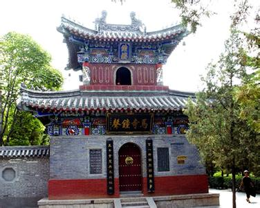

白马寺位于河南省洛阳市老城以东12公里，洛龙区白马寺镇内。创建于东汉永平十一年（公元68年），中国第一古刹，世界著名伽蓝，是佛教传入中国后兴建的第一座官办寺院，有中国佛教的“祖庭”和“释源”之称，距今已有1900多年的历史。现存的遗址古迹为元、明、清时所留。寺内保存了大量元代夹纻干漆造像如三世佛、二天将、十八罗汉等，弥足珍贵。
1961年，白马寺被中华人民共和国国务院公布为第一批全国重点文物保护单位。1983年，被国务院确定为全国汉传佛教重点寺院。2001年1月，白马寺被国家旅游局命名为首批AAAA级景区。
东汉永平七年（公元64年），汉明帝刘庄（刘秀之子）夜宿南宫，梦一个身高六丈，头顶放光的金人自西方而来，在殿庭飞绕。次日晨，汉明帝将此梦告诉给大臣们，博士傅毅启奏说“西方有神，称为佛，就像您梦到的那样”。汉明帝听罢大喜，派大臣蔡音、秦景等十余人出使西域，拜求佛经、佛法。
白马寺整个寺庙坐北朝南，为一长形院落，总面积约4万平方米。 主要建筑有天王殿、大佛殿、大雄宝殿、接引殿、毗卢阁等，均列于南北向的中轴线上。虽不是创建时的“悉依天竺旧式”，但寺址都从未迁动过，因而汉时的台、 井仍依稀可见。有五重大殿和四个大院以及东西厢房。
位于由南到北的中轴线上，从前到后依次分布着山门、天王殿、大佛殿、大雄殿、接引殿、清凉台和毗卢阁等主要建筑。其中，天王殿为单檐歇山式，东西面阔5间，南北进深4间，内供明代夹纻弥勒佛像、泥塑四大天王像、韦驮天将像等；大佛殿为单檐歇山式，东西面阔5间，南北进深4间，内供一佛，文殊、普贤二菩萨，迦叶、阿难二弟子，二供养人，观音菩萨等塑像；大雄殿为悬山式，东西面阔5间，南北进深4间，内供释迦、阿弥陀、药师“三世佛”，韦驮、韦力二天将，十八罗汉等23尊元代夹纻造像，韦力天将泥塑像等；接引殿，硬山式，面阔3间，进深2间，内供阿弥陀佛及观世音、大势至二菩萨像；毗卢阁为重檐歇山式，位于清凉台之上，东西面阔5间，南北进深4间，内供毗卢佛及文殊、普贤二菩萨。
白马寺山门全景
大雄宝殿
 钟鼓楼
分别位于山门内南北中轴线东侧和西侧。其中，钟楼由日本国中村包行先生捐资400万日元、白马寺出资60万元人民币于1991年6月建成；鼓楼于1992年竣工。钟鼓楼同为方形角楼，高7米，重檐歇山式，上覆灰色筒瓦，额枋彩绘，同建于石砌台基之上。钟鼓楼的建成恢复了寺院晨钟暮鼓的礼佛仪式，恢复了历史悠久的洛阳八大景之一——“马寺钟声”。
分别位于清凉台的东、西两侧，坐落在东西长25.2米，南北宽22.5米，高5米的台基之上。1995年建成。二阁形制相同，重檐歇山式，坐北朝南，面阔5间，进深4间，长18.5米，宽12.95米，朱漆圆柱，额枋彩绘，上覆灰色筒瓦。其中，藏经阁内供奉着泰国佛教界赠送给白马寺的中华古佛，收藏有龙藏经、中华大藏经、日本大藏经、西藏大藏经、敦煌大藏经等10余种藏经；法宝阁内供奉着1993年印度总理拉奥访华时赠送的一尊铜佛像，并收藏有数十种“法宝”。
清凉阁
位于寺院西侧墙外100米处，始建于1992年，1995年4月竣工。该殿坐西朝东，建于长27.3米，宽21.3米，高1.2米的台基之上。大殿南北长14.4米，东西宽7.5米，高10米，其廊柱与墙面均用大理石镶嵌，三重檐，顶饰琉璃瓦，具有鲜明的泰式建筑风格。在该殿之中，供奉泰国友人赠送的铜佛一尊。
位于大佛殿东侧，原为斋堂，1996年辟建。该殿为五开间硬山式建筑，南北长17.25米，东西宽5.4米，建于石砌台基之上，殿中供奉卧玉佛一尊。
位于大佛殿西侧，原为禅堂，五开间硬山式建筑，南北长17.25米，东西宽5.4米，建于石砌台基之上，殿内供奉玉佛一尊。
位于大佛殿西侧南部，原为祖堂，硬山式建筑，西阔七间，南北长24.5米，东西宽5.4米，建于石砌台基之上。殿内供奉禅宗六祖木雕像。
齐云塔院是河南唯一的一所比丘尼道场。院内主要建筑是金代重修的齐云塔和新建的斋堂、客堂、禅房等。其中，齐云塔始建于东汉明帝时，本称“释迦舍利塔”，后屡毁于战火，至金大定十五年（1175年）得以重修。金修释迦舍利塔为四方形密檐式砖塔，13层，高约25米，是洛阳一带现存最早的金代地面建筑之一；清代，白马寺住持如琇依据东汉明帝创建齐云塔的记载改称“齐云塔”。中华人民共和国成立后，洛阳市人民政府对齐云塔实施保护，于1990年建成，占地15亩的齐云塔院。该院坐北朝南，平面为长方形。在由南到北的中轴线上分布着山门、放生池、石拱桥、齐云塔等建筑。在齐云塔的东西两侧分布着附属建筑：西侧修建有3间念佛堂、3间斋堂；东侧修建有3间客堂、3间培训班教室，另修建有禅房，所有建筑均为硬山式。在山门的两侧为大型佛教碑廊，西边为禅宗三十三祖画像及传法偈，东边为“释迦牟尼应化事迹”及高僧大德墨宝。1999年前后，白马寺寺院把白马寺镇政府所建的“狄公祠”收归寺院所有，并进行改建。此外，还新建了假山、观赏亭、放生池等游览设施。
齐云塔院
白马寺保存的古代碑刻40余方。其中，最具历史价值的有：宋崇宁二年刻石、金“重修释迦舍利塔记”碑、元“龙川和尚遗嘱记”刻石、元“洛京白马寺祖庭记”碑、明“重修古刹白马禅寺记”碑等。
白马寺景区内据称有一口千年历史的许愿古井。相传这口千年许愿古井能为人们带来吉祥如意和健康平安，于是前来旅游赏景的不少游客争相向许愿古井丢钱币，以图“吉利”。据白马寺景区内一位正在负责清理内古井内钱币的寺庙僧人介绍，向许愿古井丢钱币以图“吉利”做法由来以久，特别是重大节假日慕名前来寺庙旅游和烧香拜佛的中外游客更是特意赶到许愿古井丢钱币，以图“吉利和平安“，他们忙得时候一天最多要清理古井内各种钱币三四次。
许愿井
印度佛殿
2004年6月25日，印度前总理瓦杰帕伊，参访白马寺，并虔诚地朝拜印度两位高僧摄摩腾、竺法兰在白马寺的圣冢。在朝拜之时，诱发灵感，萌生在白马寺修建具有印度建筑风格佛殿的念头。此后，经中印双方友好协商，达成了建殿意向。
缅甸佛殿
缅甸风格佛塔位于白马寺院西北侧、泰国风格佛殿苑之西，南北长108米，东西宽65米，总面积7020平方米。缅甸风格佛塔主体建筑为大金塔，是按瑞德光大金塔的尺寸3:1缩小而建，高32.92米，塔基底座径51.71米，底层为展览厅。大金塔的东、西、南、北方向各有主门一道。这四道主门，以及缅甸佛塔苑的围墙，完全按照贡榜王朝的缅甸曼德勒皇宫样式直接移植过来，以喜庆的红色和富丽的金色为主色调。东、西两方除主门之外还各有一个简约的小门，高3.75米，小门上用缅甸文写有“大金塔（梵文音译）”字样。
2012年4月10日，缅甸风格佛塔奠基典礼如期举行，缅甸宗教部长一行17人莅临参加典礼。缅甸风格佛塔由缅甸政府出资兴建，缅甸亚洲世界有限公司承包并组织施工。缅甸风格佛塔的装饰材料均由缅甸政府捐赠，每次物资到达白马寺，僧众都会举行隆重的洒净祈福法会。2013年6月，主体工程全部完工。2014年6月，经过一年的紧张施工，全部工程圆满完成。
旺季：04月01日-10月07日 开放时间： 07:30-22:00
10月08日-10月31日 07:30-18:00
淡季：02月01日-03月31日 开放时间： 08:00-18:00
11月01日-次年01月31日 08:00-17:30
洛阳火车站乘56路公交车终点下车，关林庙乘58路到终点站下车。